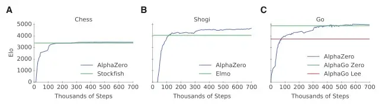
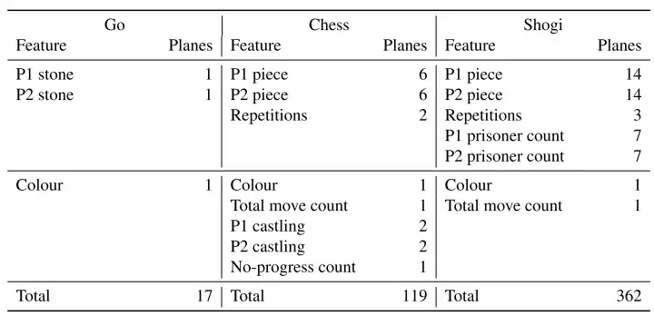
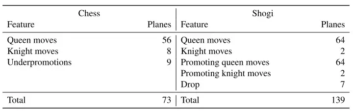
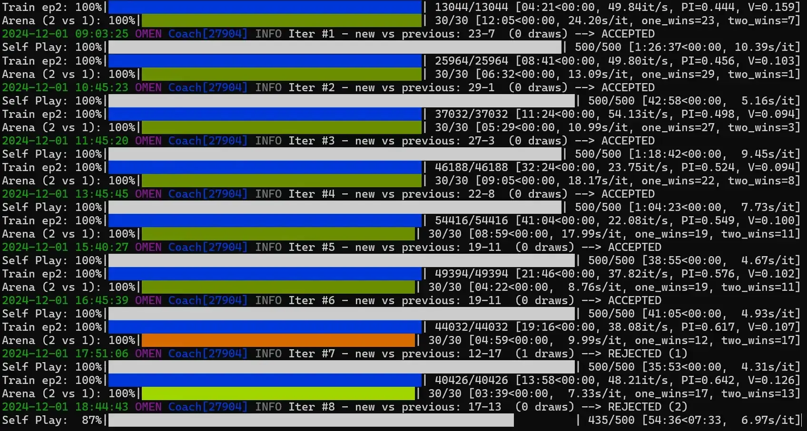
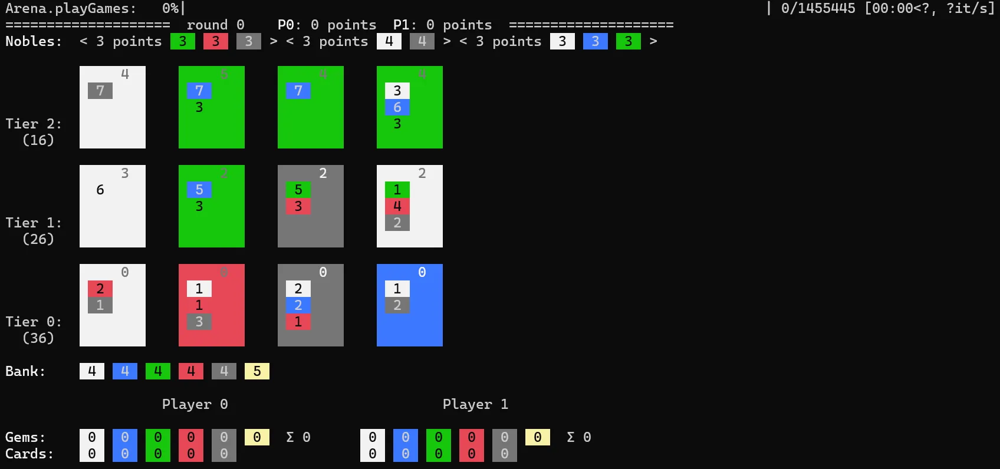
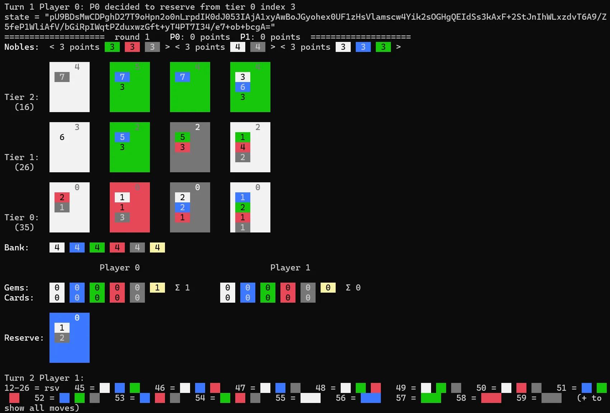
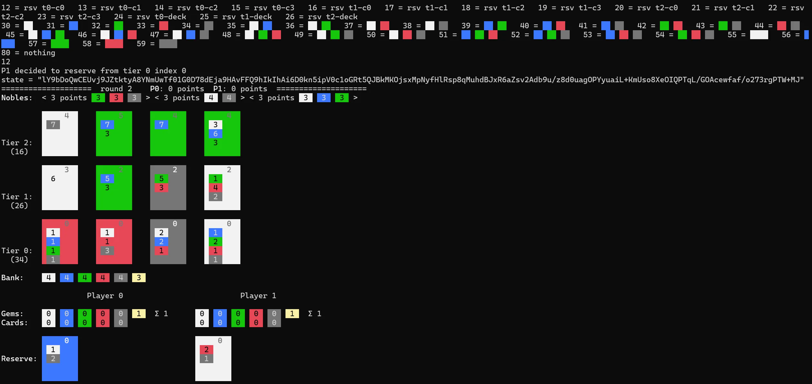
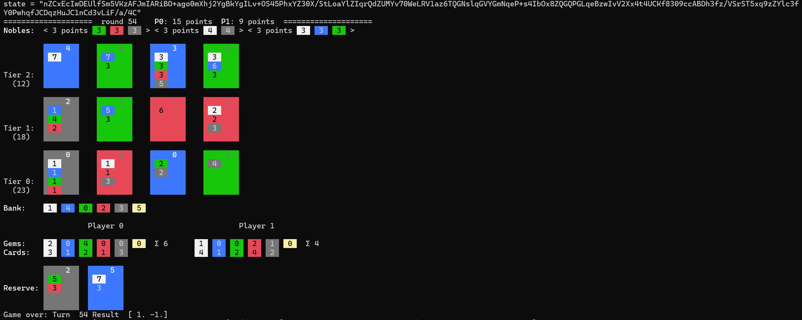

资源
代码：
- suragnair/alpha-zero-general: A clean implementation based on AlphaZero for any game in any framework + tutorial + Othello/Gobang/TicTacToe/Connect4 and more
- cestpasphoto/alpha-zero-general: A very fast implementation of AlphaZero, applied to games like Splendor, Santorini, The Little Prince, … Browser version available 这个仓库能跑！
论文：
方法论：
论文
A general reinforcement learning algorithm that masters chess, shogi and Go through self-play
一个通用的强化学习算法，通过自我发挥掌握国际象棋，将棋和围棋
{% pdf A_general_reinforcement_learning_algorit.pdf %}
Abstract
AlphaGO Zero 通过自我游戏的强化学习在围棋比赛中效果优异，这篇论文将 AlphaZero 算法用于国际象棋和日本将棋领域（从随机游戏开始，除了游戏规则之外没有任何领域知识）。
正文
- 先前国际象棋的研究不能应用到其它领域中。
- AlphaGO Zero 使用深度卷积神经网络表示围棋知识，该网络仅通过自我对弈游戏中的强化学习进行训练。
- AlphaZero 是 AlphaGO Zero 算法的更通用版本，无需特殊情况，即可适应更广泛的游戏规则。
- 本文将 AlphaZero 应用于国际象棋、将棋和围棋游戏，对这三种游戏使用相同的算法和网络架构。
- 结果表明，通用强化学习算法可以在没有特定领域人类知识或数据的情况下学习，这一点可以从同一算法在多个领域取得成功中看出，它在多个具有挑战性的游戏中取得了超越人类的表现。
- AlphaZero 用深度神经网络、通用强化学习算法和通用树搜索算法取代了传统游戏程序中使用的手工知识和特定领域的增强。
- AlphaZero 使用了一个带参数 的深度神经网络 ，而不是一个手工制作的评估函数和移动排序启发式。
- 该神经网络 将棋局信息 作为输入
- 输出移动向量 ，其中每个动作 的分量
- 标量值 、用于估计位置 下棋的预期位置 ，
- AlphaZero 完全从自我对弈中学习这些移动概率和价值估计；然后使用它们来指导其在未来游戏中的搜索。
- AlphaZero 使用通用的**蒙特卡洛树搜索（MCTS）**算法，每次搜索都由一系列模拟的自我对弈游戏组成，这些游戏从根状态 遍历一棵树，直到到达叶子状态。
- 每次模拟都根据当前神经网络 在每个状态 中选择一个访问次数少（以前不经常探索）、移动概率高且价值高的移动 （在从 中选择 的模拟的叶子状态上取平均值）。搜索返回一个向量 ，表示移动的概率分布，。
-
AlphaZero 中：，深度神经网络的参数 通过强化学习从自对弈游戏中进行训练，
-
初始时参数 是随机初始化的。
-
每一局游戏通过从当前状态 （第 回合时的状态）开始运行蒙特卡洛树搜索（MCTS），
-
然后选择一个动作 ，该动作根据根状态的访问次数来选择，可能是按比例选择（用于探索）或者是贪心选择（用于利用）。
- 按比例选择（探索）：使用概率分布 来随机选择一个动作。这个选择是基于当前模型的预测，但并非总是选择最有可能的动作，从而允许一定程度的探索。
- 贪心选择（利用）：在某些情况下，选择概率最高的动作（即模型认为最优的动作）。这种选择方式依赖于当前的知识和对局面的评估，目的是最大化当前的回报。
-
在游戏结束时，终局状态 会根据游戏规则计算游戏结果 ：失败为 ，平局为 ，胜利为 。
-
神经网络参数 会更新，以最小化预测结果 与游戏结果 之间的误差，并最大化策略向量 与搜索概率 之间的相似性。具体而言，参数 会通过对损失函数 进行梯度下降调整，损失函数 是均方误差和交叉熵损失的总和：
其中 是控制 权重正则化水平的参数。更新后的参数用于后续的自我游戏。
-
-
围棋棋盘具有对称性（旋转对称性、反射对称性），AlphaGo 和 AlphaGo Zero 在处理围棋时利用了这一对称性（实现了数据增强）。训练数据通过为每个棋盘位置生成八个对称变换来增强。其次，在进行蒙特卡洛树搜索（MCTS）时，棋盘位置会通过随机选择的旋转或反射进行变换，然后由神经网络进行评估，以便蒙特卡洛评估能够覆盖不同的偏差。
-
为了适应更广泛的游戏类别，AlphaZero 不假设对称性：国际象棋和将棋不具有这种对称性（兵只能向前移动，王车易位王侧和后侧规则不同，不具有反射对称性）。此时，AlphaZero 没有使用对称性来增强训练数据，也没有在 MCTS 中进行棋盘位置的变换。
- 在 AlphaGo Zero 中，自对弈游戏（self-play）是由所有先前迭代中的最佳玩家生成的。
- 在每次训练迭代后，新玩家的表现会与最佳玩家进行对比；如果新玩家以 55% 的优势获胜，则它会取代最佳玩家。
- 与此不同，AlphaZero 始终保持一个单一的神经网络，并持续不断地更新，而不是等待迭代完成。
- 自对弈游戏始终使用该神经网络的最新参数生成。
- 像 AlphaGo Zero 一样，
- ==棋盘状态是通过仅基于每个游戏的基本规则的空间平面进行编码的==。
- ==动作则通过空间平面或平坦的向量进行编码，同样仅基于每个游戏的基本规则==。
- AlphaGo Zero 使用了一个卷积神经网络架构，这种架构特别适合围棋：围棋的规则具有平移不变性（与卷积网络的权重共享结构相匹配），并且规则是通过棋盘上点之间的相邻关系来定义的（与卷积网络的局部结构相匹配）。相比之下，国际象棋和将棋的规则是位置依赖的（例如，兵从第二排可以前进两步，并且在第八排升变），并且包含长程的交互作用（例如，皇后可以在一回合内横扫整个棋盘）。尽管存在这些差异，AlphaZero 在国际象棋、将棋和围棋中仍然使用与 AlphaGo Zero 相同的卷积网络架构。
- AlphaGo Zero 的超参数是通过贝叶斯优化进行调整的。**在 AlphaZero 中，我们为所有游戏重用了相同的超参数、算法设置和网络架构，而没有进行针对特定游戏的调整。**唯一的例外是探索噪声和学习率调度。
- 我们为国际象棋、将棋和围棋训练了独立的 AlphaZero 实例。训练进行了 700,000 步（每个小批量包含 4,096 个训练位置），从随机初始化的参数开始。
- 在训练期间，使用了 5,000 个第一代张量处理单元（TPU）（19）来生成自对弈游戏，并使用了 16 个第二代 TPU 来训练神经网络。
- 训练分别持续了约 9 小时（国际象棋）、12 小时（将棋）和 13 天（围棋）。
{kind=link}

- 上图中展示了 AlphaZero 在自对弈强化学习过程中的表现，训练步骤的函数关系，使用的是 Elo 等级。
- 在国际象棋中，AlphaZero 在仅 4 小时（300,000 步）后首次超越 Stockfish；
- 在将棋中，AlphaZero 在 2 小时（110,000 步）后首次超越 Elmo；
- 而在围棋中，AlphaZero 在 30 小时（74,000 步）后首次超越 AlphaGo Lee。
Elo 等级（Elo rating）是一种用于衡量棋手或其他对抗性游戏玩家水平的系统，广泛应用于国际象棋、围棋、足球等多个领域。该系统由匈牙利裔美国物理学家 阿尔帕德·厄尔欧（Arpad Elo）于 20 世纪 50 年代提出，旨在提供一种公平和准确的方式来评估玩家之间的实力差距。
Elo 等级的基本原理
Elo 等级系统的核心思想是通过对局结果来动态调整玩家的等级分数。每次对局后，根据比赛的胜负情况、对手的实力等因素，玩家的等级分数会发生变化。具体而言，Elo 等级系统有以下几个关键点：
初始等级：
- 每个玩家初始时会有一个基本的等级分数，通常是 1200 或 1500（具体数值可能因竞技项目而异）。
等级变化：
- 每次比赛后，玩家的 Elo 等级会根据比赛结果进行调整。如果一个低等级的玩家击败了一个高等级的玩家，那么低等级玩家的 Elo 分数会增加得更多，而高等级玩家的 Elo 分数会下降得更多。
- 相反，如果高等级玩家击败低等级玩家，胜者的 Elo 分数会略微增加，败者的 Elo 分数则会略微下降。
计算公式： Elo 等级的变化是通过以下公式计算的：
是比赛后的新等级分数。
是比赛前的等级分数。
是一个常数，决定了等级变化的幅度，通常在 10 到 40 之间。高等级的玩家通常使用较小的 值，而新手玩家或较低等级玩家使用较大的 值。
是比赛的实际结果，胜者为 1，平局为 0.5，失败者为 0。
是预期的比赛结果，通常通过双方的 Elo 等级差来计算。预期结果是基于两位玩家等级的差距，计算公式为：
其中 是对手的 Elo 等级， 是玩家的 Elo 等级。
胜负关系的影响：
- 如果两个玩家的 Elo 等级差距很大，低等级的玩家获胜时，会获得更多的分数，而高等级的玩家会失去更多的分数。
- 如果两位玩家的 Elo 等级相近，胜负的影响就会较小，等级的变动也会较为平缓。
平局的处理：
- 在 Elo 系统中，平局的处理是通过赋予两个玩家中等的等级变化来进行的。例如，若两位玩家的等级差距较小，平局可能意味着双方等级都会略微变化。
- 我们分别将完全训练好的 AlphaZero 实例与国际象棋中的 Stockfish、将棋中的 Elmo 和围棋中的 AlphaGo Zero 进行了对抗评估。每个程序都运行在为其设计的硬件上：
- Stockfish 和 Elmo 使用 44 个中央处理单元（CPU）核心（如同 TCEC 世界冠军赛中一样），而 AlphaZero 和 AlphaGo Zero 使用单台配备四个第一代 TPU 和 44 个 CPU 核心的机器（24）。国际象棋比赛与 2016 年 TCEC（第 9 赛季）世界冠军 Stockfish 对弈。
- 将棋比赛与 2017 年 CSA 世界冠军版 Elmo 对弈。
- 围棋比赛与之前发布的 AlphaGo Zero 版本对弈（该版本同样训练了 700,000 步）。
- 所有比赛都使用了每局 3 小时的时间控制，每步棋额外增加 15 秒。
- 围棋：AlphaZero 击败了 AlphaGo Zero，赢得了 61% 的比赛，证明通用方法能够恢复原本通过棋盘对称性获得更多数据的算法表现。
- 国际象棋：AlphaZero 击败了 Stockfish，在 1,000 场比赛中赢得了 155 场，输了 6 场。AlphaZero 在常见人类开局中表现优异，甚至在 2016 年 TCEC 世界冠军赛使用的开局中也获胜。此外，AlphaZero 在与不同版本的 Stockfish 对弈中均以大比分获胜。
- 将棋：AlphaZero 击败了 Elmo，在黑棋时赢得了 98.2% 的比赛，总胜率为 91.2%。在较短时间控制下的比赛中，AlphaZero 依然以大比分获胜。
Mehtods
Anatomy of a Computer Chess Program
计算机国际象棋程序剖析
Alpha-beta 剪枝通过减少搜索树中不必要的分支来提高效率。其基本原理是，当一个分支的评估结果已经足够好（对于当前玩家来说），就可以提前停止对这个分支的进一步搜索。这样就避免了对不可能影响最终决策的分支进行计算，从而减少了搜索的状态数。
Alpha-beta 剪枝的工作原理
- Minimax 基本思想：在一个给定的局面中，Max 玩家（假设是“我方”）会选择能最大化其得分的动作，而 Min 玩家（假设是“对方”）会选择能最小化得分的动作。
- Alpha 和 Beta 值：
- Alpha：当前 Max 玩家（“我方”）的最佳选择的最小值。在搜索过程中，Alpha 会随着每一层的 Max 玩家逐步更新，表示 Max 玩家能够保证的最低得分。
- Beta：当前 Min 玩家（“对方”）的最佳选择的最大值。在搜索过程中，Beta 会随着每一层的 Min 玩家逐步更新，表示 Min 玩家能够保证的最高得分。
- 剪枝的过程：
- 在搜索树的某个节点，Max 玩家已经知道，若继续搜索某个分支将无法改善其当前得分（因为 Beta <= Alpha），就可以停止对该分支的搜索，称为剪枝。
- 同理，Min 玩家也会剪枝那些其最优策略已不可能被改善的分支。
每个棋局位置 由一个稀疏向量表示，向量包含手工设计的特征 ，其中包括中局/残局特定的棋子点值、棋子不平衡表、棋子-格表、棋子活动性和被困棋子、兵结构、王安全、前哨、象对等其他杂项评估模式。每个特征 通过手动和自动调节的组合，分配一个相应的权重 ，并通过线性组合来评估位置：
然而，这个原始评估仅在“安静”位置（没有未解决的吃子或将军）时被认为是准确的。在应用评估函数之前，使用一个领域特定的静态搜索（quiescence search）来解决正在进行的战术情况。
位置 最终的评估通过极小化搜索（minimax search）来计算，该搜索使用静态搜索来评估每个叶子节点。Alpha-beta 剪枝用于安全地剪除任何被另一变化支配的分支。通过使用预期窗口和主要变化搜索，还可以实现额外的剪枝。其他剪枝策略包括空手走剪枝（null move pruning），它假设在不太可能处于逼迫位置（zugzwang）的情况下，传递走棋应比任何变化差，具体取决于简单的启发式方法；无效剪枝（futility pruning），它假设已知评估的最大可能变化；以及其他领域依赖的剪枝规则（它们假设已知被吃棋子的价值）。
搜索的重点是有前途的变化，通过扩展有前途的变化的搜索深度，并通过减少搜索深度的基础上，如历史，静态交换评估（SEE）和移动件类型的无前途的变化。扩展是基于域独立的规则，识别奇异的移动没有合理的替代品，和域相关的规则，如扩展检查移动。减少，如后期移动减少，在很大程度上是基于领域知识。
Alpha-beta 搜索的效率关键取决于考虑移动的顺序。因此，通过迭代深化（使用较浅的搜索来为更深的搜索排序移动）来排序移动。此外，结合领域独立的移动排序算法，如杀手启发式，历史启发式，反移动启发式，以及基于捕获（SEE）和潜在捕获（MVV/LVA）的领域相关知识。
当多条路径到达同一位置时，换位表便于重新使用值和移动顺序。在某些变体中，可以使用仔细调整的开局书来在游戏开始时选择移动。一个残局表库，预先计算详尽的逆行分析残局的立场，提供了最佳的行动在所有立场与六个，有时七个或更少。
其他强大的国际象棋程序，包括早期的程序如 Deep Blue，也使用了非常相似的架构，其中包括上述描述的大多数组件，尽管重要细节差异很大。
本节中描述的技术都未被 AlphaZero 使用。尽管这些技术可能会进一步提升 AlphaZero 的性能，但我们专注于纯粹的自对弈强化学习方法，将这些扩展留待未来的研究。
Prior Work on Computer Chess and Shogi
计算机国际象棋和将棋的前期工作
早期的 AI 都将其学习的评估功能与通过各种扩展增强的 alpha-beta 搜索相结合。
相比之下，基于使用类似于 AlphaZero 的策略迭代算法训练双重策略和价值网络的方法成功应用于游戏 Hex。这项工作在几个方面与 AlphaZero 不同：策略网络是通过模仿预先存在的 MCTS 搜索算法来初始化的，并通过推出来增强；网络随后在每次迭代中从头开始重新训练；价值目标是基于使用原始策略网络的自玩游戏的结果，而不是 MCTS 搜索。
MCTS and Alpha-Beta Search
在至少四十年的时间里，最强大的计算机国际象棋程序都使用了带有手工设计评估函数的 alpha-beta 搜索。使用传统蒙特卡洛树搜索（MCTS）的国际象棋程序远弱于基于 alpha-beta 搜索的程序，而且基于神经网络的 alpha-beta 程序之前也无法与更快的手工设计评估函数竞争。
令人惊讶的是，AlphaZero 通过有效地结合 MCTS 和神经网络超越了以往的方法。AlphaZero 使用深度神经网络非线性地评估棋局位置，而不是典型国际象棋程序中使用的线性评估函数。这提供了更强大的评估功能，但也可能引入更大的最坏情况泛化误差。当与 alpha-beta 搜索结合使用时，alpha-beta 搜索计算一个显式的极小化极大值（minimax），通常最大的误差会直接传播到子树的根节点。相比之下，AlphaZero 的 MCTS 对子树中的位置评估进行平均，而不是计算该子树的极小化极大值。我们推测，神经网络引入的近似误差在评估大型子树时往往会相互抵消。
Domain Knowledge
AlphaZero 被提供了关于每个游戏的以下领域知识：
- 描述棋局位置的输入特征和描述棋步的输出特征被结构化为一组平面；即神经网络架构与棋盘的网格结构相匹配。
- AlphaZero 被提供了完美的游戏规则知识。这些知识在 MCTS 中使用，用于模拟由一系列棋步产生的棋局位置，确定游戏结束，并对达到终局状态的任何模拟进行评分。
- 游戏规则的知识还用于编码输入平面（即王车易位、重复局面、无进展等）和输出平面（如棋子的移动方式、升变、以及将棋中的棋子落子）。
- 使用典型的合法棋步数量来调整探索噪声（见下文）。
- 超过 512 步的国际象棋和将棋游戏会被终止，并赋予平局结果；超过 722 步的围棋游戏会被终止，并根据 Tromp-Taylor 规则（围棋中的一种规则）进行评分，类似于之前的工作。
AlphaZero 没有使用开场书、残局表库或特定领域的语法。
Search
我们简要描述了 AlphaZero 使用的蒙特卡洛树搜索（MCTS）算法；更多的细节可以在补充材料中的伪代码中找到。
每个状态-动作对 存储一组统计数据：
，其中 是访问次数， 是总动作值， 是平均动作值， 是在状态 中选择动作 的先验概率。
每次模拟从搜索树的根节点 开始，在模拟到达叶节点 的时间步 时结束。在这些时间步 中，使用 PUCT 算法（47）的变体选择一个动作 ，其中
其中 是父节点的访问次数， 是探索率，随着搜索时间缓慢增长，定义为
但在快速训练游戏中基本保持不变。叶节点 被添加到一个队列中以进行神经网络评估，。然后展开叶节点，并且每个状态-动作对 被初始化为
随后，在从步骤 的反向传递中，更新访问次数和数值：
Representation
在本节中，我们描述了 AlphaZero 中神经网络使用的棋盘输入表示和动作输出表示。虽然可以使用其他表示方法，但在我们的实验中，训练算法在许多合理的选择下都能稳健地工作。
输入表示
- 神经网络的输入是一个 的图像堆栈，
- 使用 组每组 个大小为 的平面拼接来表示状态。每组平面表示时间步 时的棋盘位置，对于小于 1 的时间步，设置为零。
- 棋盘朝向当前玩家的视角。 个特征平面由二进制特征平面组成，用于表示玩家棋子的位置，每个棋子类型对应一个平面，第二组平面表示对手棋子的位置。对于将棋，额外的平面表示每种类型被俘虏的棋子数量。
- 还有 个常量值的输入平面，表示玩家的颜色、走棋回合数和特殊规则的状态：在国际象棋中表示王车易位的合法性（王翼或后翼）；表示当前棋局的重复次数（在国际象棋中，三次重复为自动和棋，在将棋中为四次）；
- 以及国际象棋中的无进展回合数（50 步无进展为自动和棋）。
在这里，“平面”（plane）指的是一个二维的矩阵或数组，通常用于表示棋盘中的不同特征或信息。每个平面包含了棋盘上每个位置（例如每个格子）的值。对于 AlphaZero 的神经网络而言，输入的每一个平面都代表了棋盘的一个特定特征，比如玩家的棋子、对手的棋子、棋子的移动范围等。
具体解释：
- 平面的维度：每个平面是一个大小为 的矩阵，在国际象棋中， 通常是 ，因为棋盘是 的格子。在将棋中， 是 ，因为棋盘是 的格子。而在围棋中， 是 。
- 每个平面的含义：
- 棋子存在的平面：每个平面可能表示某一类棋子的位置（例如，所有白色棋子的平面、所有黑色棋子的平面）。
- 特殊规则的平面：例如，某个平面可能表示棋盘上是否发生了王车易位，或者表示某种特殊规则，如吃子或棋局是否无进展。
- 多平面的堆叠：神经网络的输入是一个多个平面堆叠在一起的结构，每一组平面表示一个特定的棋盘状态。例如，AlphaZero 会将多个平面（如棋盘上每种棋子的分布）堆叠在一起，形成一个多层的表示，这样神经网络就能处理和理解更复杂的信息。
{kind=link}

AlphaZero 分别在围棋、国际象棋和将棋中使用的输入功能。在 $T=8$ 步历史中，对每个位置重复第一组特征。计数由单个实值输入表示；其他输入特征由使用指定数量的二进制输入平面的独热编码表示。当前玩家用 $\mathrm{P}1$ 表示，对手用 $\mathrm{P}2$ 表示。
动作表示
-
国际象棋中的一步棋可以分为两部分：首先选择要移动的棋子，然后选择该棋子可能的移动方式。我们通过一个 的平面堆栈来表示策略 ，该堆栈编码了 种可能走法的概率分布。
-
每个 的位置标识了“拿起”棋子的方格。
-
前 个平面编码了任何棋子的“后宫走法”（除了马之外，其余棋子的走法均是后走法的子集）：表示棋子可以移动的方格数 ，并且沿着八个相对的方向之一 移动。
-
接下来的 个平面编码了该棋子的骑士走法。
-
最后的 个平面编码了兵走或吃子的可能升变走法，在两个可能的对角线上分别升变为骑士、象或车。来自七路的其他兵走或吃子则升变为后。
-
-
将棋中的策略由一个 的平面堆栈表示，同样编码了 种可能走法的概率分布。
- 前 个平面编码了“后宫走法”，接下来的 个平面编码了骑士（桂马）走法。
- 额外的 个平面分别编码了升变为后的走法和升变为骑士的走法。（我不太明白为什么要这么设计）
- 最后的 个平面编码了被俘棋子被放回棋盘上的位置。
-
围棋中的策略与 AlphaGo Zero 相同，使用一个平坦的分布表示 个可能的走子和过棋走法。我们也尝试过使用国际象棋和将棋的平坦分布，最终结果几乎相同，尽管训练速度略慢。非法走法通过将它们的概率设置为零来屏蔽，然后对剩余的合法走法重新归一化概率。
-
通过将非法移动的概率设置为 ，并在剩余的合法的移动集合上重新标准化概率，来掩盖非法移动。
{kind=link}

Architecture
除了上述描述的位置和动作表示外，AlphaZero 使用与 AlphaGo Zero 相同的网络架构，在此简要回顾。
- 神经网络由一个“主体”和两个“头”组成，分别是策略头和价值头。
- 主体部分由一个经过修正的批量归一化卷积层组成，后接 个残差块。每个残差块由两个修正的批量归一化卷积层组成，并有跳跃连接。每个卷积层应用 个 大小的卷积滤波器，步幅为 。
- 策略头在此基础上应用一个额外的修正批量归一化卷积层，接着是一个最终的卷积层，棋盘游戏（国际象棋）使用 个滤波器，将棋使用 个滤波器，围棋使用一个大小为 362 的线性层，表示上述策略的 logits。
- 价值头在此基础上应用一个额外的修正批量归一化卷积层，使用一个 大小的滤波器，步幅为 ，接着是一个修正线性层，大小为 ，并通过一个 激活的线性层输出一个大小为 的结果。
- 1 表示当前局面非常有利于当前玩家（即局面接近胜利）。
- -1 表示当前局面非常不利于当前玩家（即局面接近失败）。
- 0 表示当前局面是平局。
代码
配置环境
conda create -n AlphaZero python=3.9
conda activate AlphaZero
pip3 install onnxruntime onnx numba tqdm colorama coloredlogs
pip3 install torch torchvision --extra-index-url https://download.pytorch.org/whl/cpu一阵操作，得到环境：
# packages in environment at C:\XXX\AlphaZero:
#
# Name Version Build Channel
ca-certificates 2024.11.26 haa95532_0 https://mirrors.tuna.tsinghua.edu.cn/anaconda/pkgs/main
colorama 0.4.6 pypi_0 pypi
coloredlogs 15.0.1 pypi_0 pypi
filelock 3.16.1 pypi_0 pypi
flatbuffers 24.3.25 pypi_0 pypi
fsspec 2024.10.0 pypi_0 pypi
humanfriendly 10.0 pypi_0 pypi
jinja2 3.1.4 pypi_0 pypi
llvmlite 0.43.0 pypi_0 pypi
markupsafe 3.0.2 pypi_0 pypi
mpmath 1.3.0 pypi_0 pypi
networkx 3.2.1 pypi_0 pypi
numba 0.60.0 pypi_0 pypi
numpy 2.0.2 pypi_0 pypi
onnx 1.17.0 pypi_0 pypi
onnxruntime 1.19.2 pypi_0 pypi
openssl 3.0.15 h827c3e9_0 https://mirrors.tuna.tsinghua.edu.cn/anaconda/pkgs/main
packaging 24.2 pypi_0 pypi
pillow 11.0.0 pypi_0 pypi
pip 24.2 py39haa95532_0 https://mirrors.tuna.tsinghua.edu.cn/anaconda/pkgs/main
protobuf 5.29.0 pypi_0 pypi
pyreadline3 3.5.4 pypi_0 pypi
python 3.9.20 h8205438_1 https://mirrors.tuna.tsinghua.edu.cn/anaconda/pkgs/main
setuptools 75.1.0 py39haa95532_0 https://mirrors.tuna.tsinghua.edu.cn/anaconda/pkgs/main
sqlite 3.45.3 h2bbff1b_0 https://mirrors.tuna.tsinghua.edu.cn/anaconda/pkgs/main
sympy 1.13.1 pypi_0 pypi
torch 2.5.1+cpu pypi_0 pypi
torchvision 0.20.1+cpu pypi_0 pypi
tqdm 4.67.1 pypi_0 pypi
typing-extensions 4.12.2 pypi_0 pypi
tzdata 2024b h04d1e81_0 https://mirrors.tuna.tsinghua.edu.cn/anaconda/pkgs/main
vc 14.40 h2eaa2aa_1 https://mirrors.tuna.tsinghua.edu.cn/anaconda/pkgs/main
vs2015_runtime 14.40.33807 h98bb1dd_1 https://mirrors.tuna.tsinghua.edu.cn/anaconda/pkgs/main
wheel 0.44.0 py39haa95532_0 https://mirrors.tuna.tsinghua.edu.cn/anaconda/pkgs/main
当心
编辑代码，由于版本问题，得把代码中的某个 np.bool8 改成 np.bool_。
训练 Splendor
训练一个《璀璨宝石》的 AI：
python main.py splendor -m 800 -f 0.1 -l 0.0003 -D 0.3 -C ../results/mytest -V 74一开始会显示训练所设置的参数：
Namespace(game='splendor', checkpoint='../results/mytest', load_folder_file=None, numEps=500, numItersHistory=5, numMCTSSims=800, tempThreshold=10, temperature=[1.25, 0.8], cpuct=1.25, dirichletAlpha=-1, fpu=0.1, forced_playouts=False, learn_rate=0.0003, epochs=2, batch_size=32, dropout=0.3, nn_version=74, q_weight=0.5, updateThreshold=0.6, ratio_fullMCTS=5, prob_fullMCTS=0.25, universes=1, forget_examples=False, numIters=50, stop_after_N_fail=5, profile=False, debug=False, useray=False, parallel_inferences=8, no_compression=False, no_mem_optim=False, arenaCompare=30, maxlenOfQueue=1000000, load_model=False)
| 参数 | 值 | 说明 |
|---|---|---|
| game | 'splendor' | 表示当前训练或模拟的游戏是 Splendor。 |
| checkpoint | '../results/mytest' | 指定保存模型检查点（中间结果）的路径，用于在训练过程中保存模型进度。 |
| load_folder_file | None | 表示是否加载已有的模型或文件。这里，None 表示不加载任何已有模型。 |
| numEps | 500 | 表示训练或评估时，AI 将进行 500 轮游戏（episode）。 |
| numItersHistory | 5 | 可能表示模型在学习或决策时，会考虑 5 轮历史游戏状态。 |
| numMCTSSims | 800 | 每次决策时，AI 将进行 800 次蒙特卡洛树搜索（MCTS）模拟，用于探索可能的未来游戏状态。 |
| tempThreshold | 10 | 可能是一个温度阈值，用于控制探索与利用的平衡。 |
| temperature | [1.25, 0.8] | 通常，温度参数用来控制强化学习中的探索与利用的权衡，值越高，越偏向于探索，值越低，越偏向于利用。 |
| cpuct | 1.25 | MCTS 中的一个参数，控制探索与利用的平衡，较高的值会促进更多的探索。 |
| dirichletAlpha | -1 | 与 Dirichlet 噪声有关，这通常用于 MCTS 的探索阶段，值为 -1 表示不启用 Dirichlet 噪声。 |
| fpu | 0.1 | 可能表示一个小的随机因素，用于促使模型进行更多的探索。 |
| forced_playouts | False | 是否启用强制性模拟（forced playouts）。在强化学习中，模拟用于预测某个游戏状态下的可能结果。 |
| learn_rate | 0.0003 | 训练过程中使用的学习率，决定模型每次更新时调整的幅度。 |
| epochs | 2 | 训练时的周期数，即对整个训练集迭代的次数。 |
| batch_size | 32 | 每次训练的批次大小，表示每次模型更新使用32个样本。 |
| dropout | 0.3 | 在神经网络中使用的一种正则化技术，用于防止过拟合，这里表示在训练过程中随机丢弃 30% 的神经元。 |
| nn_version | 74 | 表示使用的神经网络版本，可能是某种特定的网络架构或配置。 |
| q_weight | 0.5 | 可能是用于计算 Q 值（在 Q 学习中）的权重，表示不同目标函数的权重比例。 |
| updateThreshold | 0.6 | 可能表示在什么条件下，模型会更新其参数。 |
| ratio_fullMCTS | 5 | 表示在进行决策时，完整的 MCTS 与部分 MCTS 的比例，可能意味着模型在某些情况下会使用更全面的搜索。 |
| prob_fullMCTS | 0.25 | 在决策过程中，执行完整 MCTS 的概率。 |
| universes | 1 | 可能表示在训练或模拟时并行运行的“宇宙”数量，类似于多线程或多个并行游戏。 |
| forget_examples | False | 表示是否忘记某些训练样本（例如，某些游戏状态）用于训练。 |
| numIters | 50 | 训练过程中的迭代次数，表示模型将进行 50 次训练。 |
| stop_after_N_fail | 5 | 如果模型连续失败达到 5 次，则停止训练或做出调整。 |
| profile | False | 是否启用性能分析，通常用于优化代码的效率。 |
| debug | False | 是否启用调试模式，调试模式下可能会显示更多的错误信息和日志。 |
| useray | False | 这个参数可能是拼写错误或者是自定义的标志，具体含义不清楚。 |
| parallel_inferences | 8 | 表示模型可以并行进行 8 次推理（即同时进行 8 次预测或评估）。 |
| no_compression | False | 是否禁用任何压缩技术，压缩通常用于优化模型或存储空间。 |
| no_mem_optim | False | 是否禁用内存优化，可能会影响模型的性能或内存使用。 |
| arenaCompare | 30 | 表示测试阶段进行的对战次数，可能是用于评估模型之间的对比。 |
| maxlenOfQueue | 1000000 | 表示存储游戏状态或经验的队列的最大长度，用于经验回放等机制。 |
| load_model | False | 是否加载一个预训练的模型，False 表示不加载。 |
{kind=link}

之后就慢慢等吧……CPU 几乎也没啥占用率（所以还可以流畅地干别的事，不知道是好是坏😅）。
玩 Splendor
由于版本问题（应该吧），需要修改 Arena.py 里 85 行开始的一部分：
if verbose:
# data = board.tobytes() + curPlayer.to_bytes(1) + it.to_bytes(2)
data = board.tobytes() + curPlayer.to_bytes(1, byteorder='big') + it.to_bytes(2, byteorder='big')
# compressed_board = base64.b64encode(zlib.compress(data, level=9, wbits=-15))
compressobj = zlib.compressobj(level=9, method=zlib.DEFLATED, wbits=-15)
compressed_board = base64.b64encode(compressobj.compress(data) + compressobj.flush())
print(f'state = "{str(compressed_board, "UTF-8")}"')输入如下命令开始游戏！
python /pit.py splendor splendor/pretrained_2players.pt splendor/pretrained_2players.pt -n 1 --display或
python ./pit.py splendor splendor/pretrained_2players.pt human -n 1就可以与模型 splendor/pretrained_2players.pt 开始游戏！
splendor/pretrained_2players.pt vs human
{kind=link}

渲染了一个棋盘，此局 AI（Player 0）先行。
{kind=link}

AI 选择拿一个黄金预留一张卡。现在到我们的回合，输入 + 展示所有可能的步骤。
{kind=link}

这里我们选择了命令 12。
后面慢慢玩吧。
{kind=link}

最后输给 AI 了😵，这个 AI 还挺厉害的。
分析代码
项目部分代码：
UML 类图：